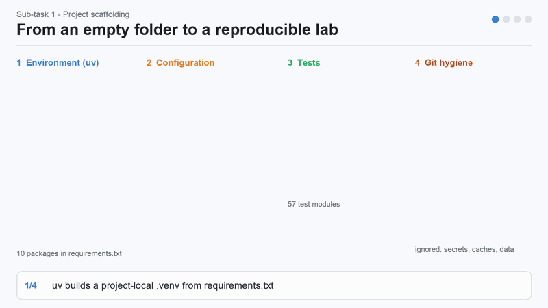
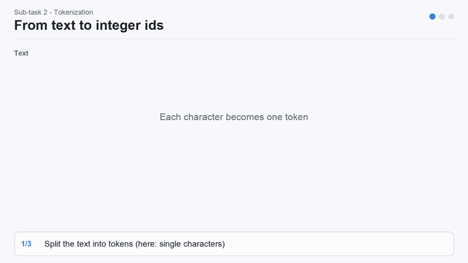
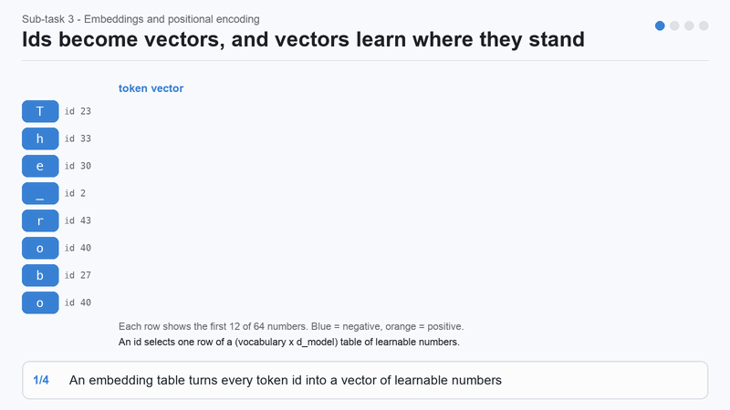
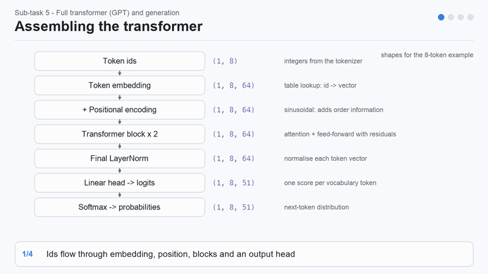
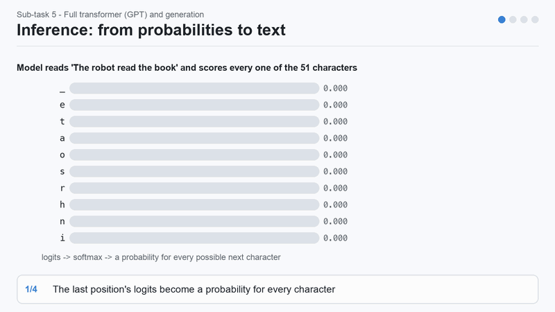
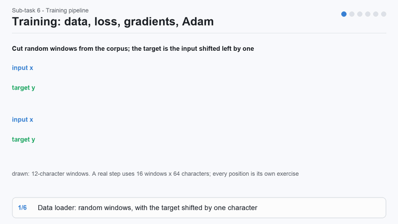
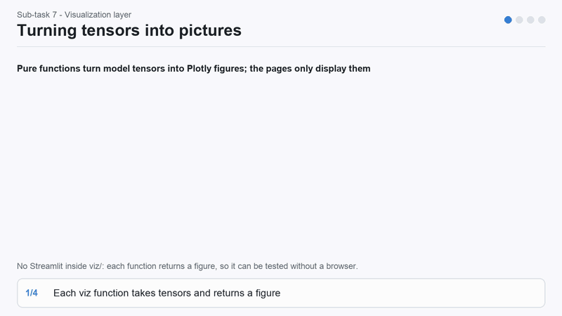
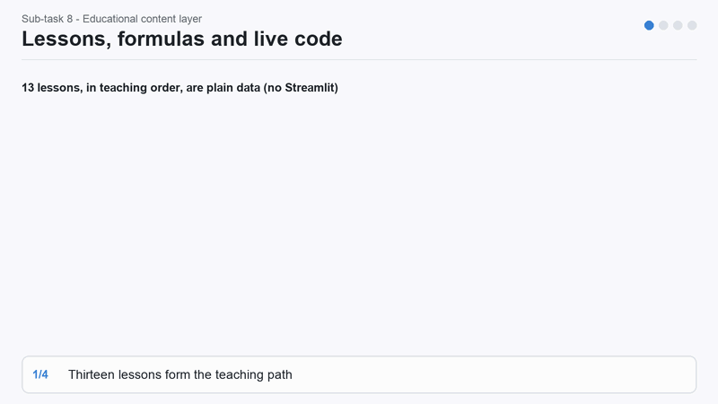
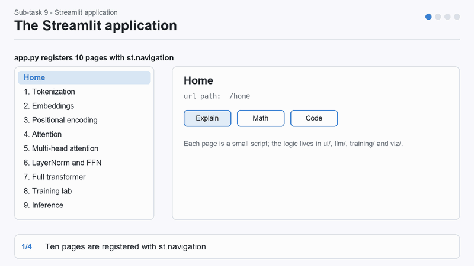
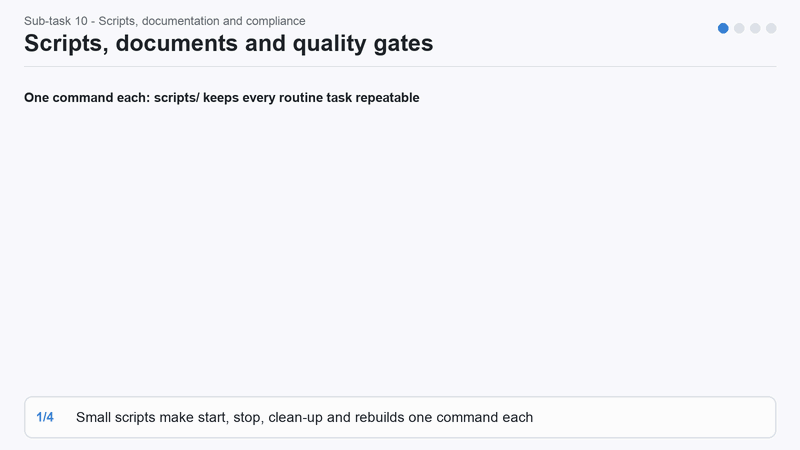

LLM from scratch: animations
One looping animation per sub-task. Every number comes from the project's own code. Each GIF pauses briefly after every step; the dots at the top right show where you are. Back to top | All written documents
Sub-task 1 - Project scaffolding: From an empty folder to a reproducible lab
Reproducible environment, configuration through .env, test harness and repository hygiene.

- uv builds a project-local .venv from requirements.txt
- Settings come from .env, validated once in config.py
- Every source module gets a unit test
- .gitignore keeps secrets, caches and data out of git

Sub-task 2 - Tokenization: From text to integer ids
From text to integer ids: character vocabulary and a hand-written byte-pair encoder.

- Split the text into tokens (here: single characters)
- Look every token up in the vocabulary to get its integer id
- BPE learns merges, so frequent character groups become single tokens

Sub-task 3 - Embeddings and positional encoding: Ids become vectors, and vectors learn where they stand
Lookup-table embeddings, initialisation, and sinusoidal or learned position signals.

- An embedding table turns every token id into a vector of learnable numbers
- A sine/cosine signal encodes each position (blue = negative, orange = positive)
- Token vector plus position signal is what enters the first transformer block
- The signal is a fixed pattern of waves: fast ones for neighbours, slow ones for distance

Sub-task 4 - Attention, LayerNorm and feed-forward: How a token looks at the others
Scaled dot-product attention with a causal mask, heads, layer normalisation and the GELU MLP.

- Every token is projected into a query, a key and a value
- Scores: how well does each query match each key?
- The causal mask hides every token that comes later
- Softmax turns each row of scores into weights that sum to 1
- Several heads read the text in parallel; their results are concatenated
- LayerNorm rescales every token vector to about mean 0 and spread 1
- The feed-forward network widens, bends with GELU, and narrows again
Sub-task 5 - Full transformer (GPT) and generation: Assembling the transformer
Pre-norm blocks, residual stream, tied output head, cross-entropy loss and sampling.

- Ids flow through embedding, position, blocks and an output head
- Inside a block: attention and feed-forward, each added back onto the residual stream
- Count the parameters: the output head shares the embedding matrix
- Cross-entropy compares the predicted distribution with the true next character

Sub-task 5 - Full transformer (GPT) and generation: Inference: from probabilities to text
Pre-norm blocks, residual stream, tied output head, cross-entropy loss and sampling.

- The last position's logits become a probability for every character
- Temperature sharpens or flattens the distribution
- Top-k removes the unlikely characters
- Sample one character, append it, and run the model again

Sub-task 6 - Training pipeline: Training: data, loss, gradients, Adam
Windowed data, backpropagation, hand-written Adam and SGD, learning-rate schedules, checkpoints.

- Data loader: random windows, with the target shifted by one character
- Forward pass and cross-entropy turn predictions into one loss number
- Backpropagation gives every weight a gradient
- Adam turns a gradient into a small, scaled weight update
- The learning rate warms up, decays, and gradients are clipped
- Repeat for every step: the loss curve falls as the model learns

Sub-task 7 - Visualization layer: Turning tensors into pictures
Plotly figure builders: PCA projections, heat maps, attention maps and live training curves.

- Each viz function takes tensors and returns a figure
- PCA squeezes the embedding vectors into a 2-D map
- A grid of heat-maps shows what every attention head looks at
- Training curves update live from the trainer's metrics

Sub-task 8 - Educational content layer: Lessons, formulas and live code
Lessons as data, LaTeX formulas and code snippets read live from the running source.

- Thirteen lessons form the teaching path
- Each lesson has the same six parts
- The Math tab pairs every formula with a plain reading and tensor shapes
- The Code tab shows the project's own source, read at run time

Sub-task 9 - Streamlit application: The Streamlit application
Navigation, shared session state, ten pages, live training lab and inference page.

- Ten pages are registered with st.navigation
- The sidebar rebuilds the model; pages share one session state
- Widgets recompute figures from the real model
- The training lab streams metrics into live charts

Sub-task 10 - Scripts, documentation and compliance: Scripts, documents and quality gates
One-command lifecycle scripts, project documents, secret scan, test gate and audit.

- Small scripts make start, stop, clean-up and rebuilds one command each
- README, Quickstart and Architecture explain the project; Docs/ holds the rest
- Tests, secret scan, git hygiene and a project audit guard every delivery
- Ten sub-tasks, one working lab